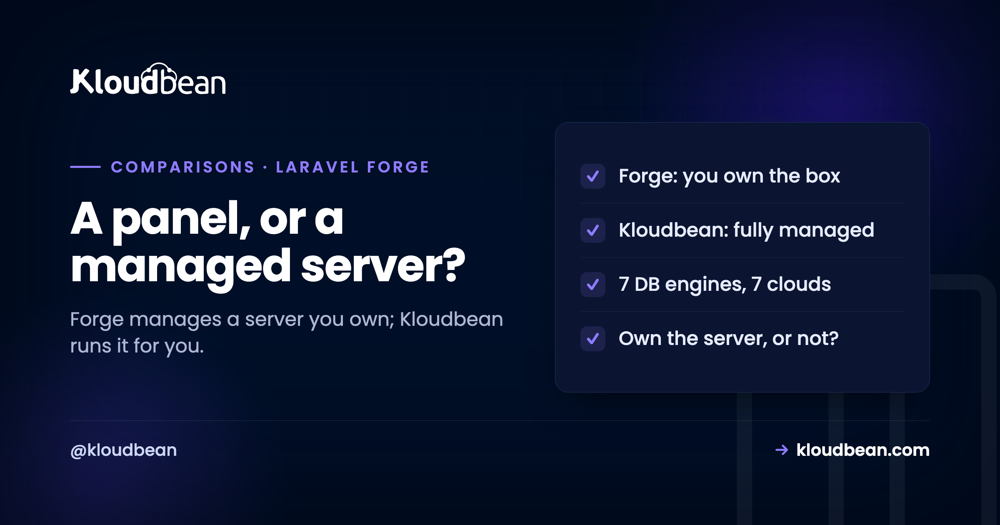

Laravel Forge vs Kloudbean: A Panel on Your Server, or the Server Managed for You

If you build with Laravel or PHP, Laravel Forge probably came up the moment you needed to get something off localhost. It's popular with Laravel developers. Kloudbean shows up in the same searches, and the two can look interchangeable from a distance: both get your app onto a real server without the raw pain of doing it by hand. But they sit at genuinely different points on the same spectrum. Forge is a control panel for a server you own. Kloudbean is a server someone else runs for you. That one distinction shapes almost everything else, so let's compare them honestly rather than pretend one wins outright.
Laravel Forge is a server management panel. It provisions and configures a Linux server on a cloud account you own (DigitalOcean, AWS, Hetzner, Linode, Vultr, or its own Laravel VPS), sets up Nginx, PHP, databases, SSL, deployments, queues, and cron, and hands you full SSH access. You still own the server and its ongoing health. Kloudbean is fully managed hosting: it runs the server, stack, patching, SSL, and backups for you across seven clouds, with seven managed database engines and the whole stack in one dashboard, for PHP and well beyond it. Forge fits developers who want a panel on a server they own and pay for separately. Kloudbean fits teams who'd rather not run the server at all. Both are honest choices; they just draw the ownership line in different places.
They solve different jobs
The fastest way to choose wrong is to treat these as two versions of the same thing, so start here.
Forge and Kloudbean both remove the tedious parts of getting an app online, but they answer different questions. Forge answers "how do I manage my own server without hating my life?" It assumes you want a server, you want SSH, you want control, and you just don't want to hand-configure Nginx and certificates every time. Kloudbean answers a different question: "how do I run my app without managing a server at all?" It assumes the server is a means to an end, and you'd happily never touch it. Neither question is more valid. But if you answer them honestly for your own situation, the choice mostly makes itself, and a lot of the feature-by-feature bickering stops mattering. One quick clarification, because the naming causes confusion: Forge is the server-management panel. It's not Laravel Cloud or Laravel Vapor, which are separate, more hands-off products. This comparison is specifically about Forge, the panel.
What Laravel Forge is, and what it isn't
Credit where it's due: Forge is good at its job, and hand-waving that away would be dishonest.
The key thing to understand, because it's what makes the price make sense, is that Forge is a dashboard, not a host. It provisions and configures a server (Nginx, PHP, MySQL or Postgres, Redis, deploy hooks, SSL, queue workers, and cron) through a clean interface, but the server itself lives in a cloud account you own and pay for separately. That's why the panel is inexpensive: you're paying for the automation layer, not the machine underneath and not the job of keeping it running. It connects to your own provider, so you keep full root access, and it recently added managed MySQL and Postgres too, which narrows one of its old gaps. For a developer or agency that's Laravel-first, comfortable owning a server, and wanting the setup automated, Forge does that job well. If your answer to "do I want to own the server?" is yes, it's a reasonable pick and I won't argue you out of it.
The part that trips people up: you still own the server
Here's the nuance the marketing on both sides tends to skip, and it's the one that actually decides things.
Forge configures your server beautifully, but the server is still yours. You own the cloud account and its bill, you own the operating system, and you own what happens six months in when a security update needs applying or a disk quietly fills with logs. Forge automates a lot of the setup and even handles SSL renewals, so this isn't the raw pain of an unmanaged box. But the responsibility line still sits with you, and the failures that bite people are rarely dramatic. It's the unpatched OS, the backup nobody tested, the server that ran out of memory at 2am with no one watching. The common mistake I see is treating a Forge server like it's fully managed: set up once, then assumed to look after itself. It won't. A panel that makes management pleasant is not the same as someone else doing the management. That's not a knock on Forge, it's just being clear about what a panel is and isn't, and it's exactly the distinction the managed versus unmanaged hosting guide digs into.
Where Kloudbean takes a different path
Kloudbean starts from the other end: the server is not your problem, and it's designed so you never have to make it your problem.
On Kloudbean the server, stack, SSL, patching, and backups are handled for you. You don't get a panel to manage your box; you get a box that's managed. Databases are one-click and fully managed, and there are seven engines, MySQL, MariaDB, PostgreSQL, Redis, Memcached, Elasticsearch, and MongoDB, not just the relational two. It isn't Laravel-only, or even PHP-only: the same platform runs Node, Python, Ruby, Java, static sites, and AI apps, so a mixed stack lives in one place. And it's one dashboard for the whole thing, servers, managed databases, object storage, and a built-in load balancer, rather than a panel for the compute and separate services for everything else. Kloudbean runs on seven clouds (AWS, AWS Lightsail, Google Cloud, Linode, Vultr, DigitalOcean, and UpCloud), which also means you can put a workload on Google Cloud's Dammam region for in-Kingdom Saudi hosting, something a panel pointed at other providers won't give you. The trade is real and worth stating: you give up root-level ownership of the box in exchange for not having to own it. And the managed server is part of the plan rather than an add-on to a separate cloud bill, so the cost is one predictable number instead of a panel fee plus an invoice from your cloud plus the hours you spend running the box. For most teams building products rather than running servers, that's the trade they actually want.
Laravel Forge vs Kloudbean, side by side
The models line up cleanly once you put them next to each other.
| Laravel Forge | Kloudbean | |
|---|---|---|
| Model | Control panel for a server you own | Fully managed server |
| Who runs the server | You (Forge automates setup) | Kloudbean |
| SSH / root | Full access, it's your box | Managed; you own app and data |
| Patching and OS upkeep | Yours | Handled for you |
| Databases | Managed MySQL and Postgres | Seven managed engines, one-click |
| Stack focus | Laravel and PHP first | PHP, Node, Python, Ruby, Java, static, AI |
| Whole stack in one place | Panel plus your own services | One dashboard: servers, DBs, storage, load balancer |
| Clouds | DO, AWS, Hetzner, Linode, Vultr, Laravel VPS | AWS, Lightsail, GCP, Linode, Vultr, DO, UpCloud |
| Price covers | The panel only; you pay for the cloud server separately | The managed server, included in the plan |
| Best for | Devs who want control and will run the server | Teams who want the server off their plate |
Which one fits you
An honest recommendation, because these genuinely suit different people and I'd rather you pick right than pick Kloudbean.
Use Laravel Forge if you're Laravel or PHP-first, you're comfortable owning a server, and you actively want that control plus SSH access, with a polished panel doing the setup grunt work. If running the box is fine by you, Forge does that well, at a fair price for what it is: a panel. Use Kloudbean if you'd rather not own a server at all, if your stack reaches past PHP, if you want managed databases beyond MySQL and Postgres, or if you want the entire stack and multiple clouds behind one login, including an in-Kingdom option. The deciding question is refreshingly simple, and it's not about features: do you want to own the server, or not? Answer that first, honestly, and the rest follows. Most small teams I've watched agonise over this were really just deciding whether server ownership is a thing they want in their life.
Where Kloudbean fits, honestly
Kloudbean's pitch in this comparison is narrow and clear: it's for people who want the server managed, not managed-by-them. It runs the box, keeps the stack patched, renews SSL, backs things up, and puts the whole stack, across seven clouds, in one dashboard, for far more than PHP.
The honest boundary: Kloudbean runs Linux web stacks, not Windows or .NET, and "managed" means it handles the server, stack, SSL, patching, and backups while you keep your application and your data. If you specifically want root ownership of your server and enjoy running it, that's not a gap in Kloudbean, it's a sign Forge suits you better, and that's a perfectly good outcome. The two aren't really enemies. Forge makes owning a server pleasant; Kloudbean makes not owning one possible. Pick the sentence that describes what you actually want.
Related reading
For the broader version of this decision, managed vs unmanaged hosting and the roundup in Cloudways alternatives, which covers the wider control-panel category. For the same raw-versus-managed question against a cloud, DigitalOcean vs Kloudbean and Google Cloud vs Kloudbean. To actually ship a Laravel app on managed infrastructure, deploy a Laravel app, and for the database side, managed vs self-managed databases.
Want the server managed, not just the setup?
Kloudbean runs the whole stack for you across seven clouds: managed servers and databases, free SSL, automatic backups, staging, and one dashboard, for Laravel and far beyond. Free migration and a free trial. Start at kloudbean.com, or weigh the wider field in Cloudways alternatives.
Fully managed servers · Seven managed DB engines · Seven clouds · One dashboard · Free migration
FAQ
What is the difference between Laravel Forge and Kloudbean?
Laravel Forge is a server management panel: it provisions and configures a Linux server on a cloud account you own and gives you full SSH access, but you still run the server. Kloudbean is fully managed hosting: it runs the server, stack, patching, SSL, and backups for you. Forge makes managing your own box pleasant; Kloudbean means you don't manage a box at all. The core difference is who owns and operates the server.
Does Laravel Forge host my app?
Not directly in the traditional sense. Forge manages servers on infrastructure you connect, such as DigitalOcean, AWS, Hetzner, Linode, or Vultr, or through its own Laravel VPS option. You typically pay for the hosting separately from the Forge subscription, except when using Laravel VPS. So Forge is the management layer on top of a server, rather than the underlying host itself in most setups.
Is Kloudbean a good Laravel Forge alternative?
It depends on what you want from Forge. If you value the control panel because you want to keep owning and SSHing into your server, Kloudbean is a different model rather than a like-for-like swap. If what you actually want is your Laravel app running without you managing the server, Kloudbean is a strong alternative, since it fully manages the server and stack and supports Laravel along with many other frameworks.
Do I still manage the server with Laravel Forge?
Yes, in the ways that matter long term. Forge automates the initial setup and handles things like SSL renewal, but you still own the cloud account, the operating system, patching, and the server's ongoing health. It is semi-managed rather than fully managed. The common trap is treating a Forge server as if it looks after itself, when the responsibility for keeping it patched, backed up, and healthy still sits with you.
Which is better for a Laravel app, Forge or Kloudbean?
Both run Laravel well, so it comes down to how much of the server you want to own. Forge is a good fit if you're Laravel-first and want control plus SSH with the setup automated. Kloudbean is the better fit if you'd rather the server was fully managed, want managed databases beyond MySQL and Postgres, or run other stacks alongside Laravel. Decide whether you want to own the server, and the answer follows from there.
Does Kloudbean support more than PHP and Laravel?
Yes. While Laravel Forge is Laravel and PHP-first, Kloudbean runs PHP frameworks like Laravel and WordPress plus Node.js, Python, Ruby, Java, static sites, and one-click AI apps. That makes Kloudbean a better fit for teams with a mixed stack who want everything on one platform, rather than a PHP-centric tool. If your world is only Laravel, both work; if it's broader, the multi-language support matters.
Which clouds do Laravel Forge and Kloudbean support?
Forge connects to DigitalOcean, AWS, Hetzner, Linode, and Vultr, plus its own Laravel VPS built on a DigitalOcean partnership. Kloudbean runs on AWS, AWS Lightsail, Google Cloud, Linode, Vultr, DigitalOcean, and UpCloud. The lists overlap but differ: Forge includes Hetzner, while Kloudbean includes Google Cloud, Lightsail, and UpCloud, which matters if you need, say, Google Cloud's Dammam region for in-Kingdom Saudi hosting.
Is Laravel Forge cheaper than Kloudbean?
They price differently, so compare the total rather than the sticker. Forge charges a flat rate for the panel, and you usually pay for the underlying server separately, so your real cost is the subscription plus the cloud bill plus the time you spend owning the server. Kloudbean's plan includes the managed server itself. Which is cheaper depends on your setup and on how you value the time spent running a server you own, so add up both sides before deciding.